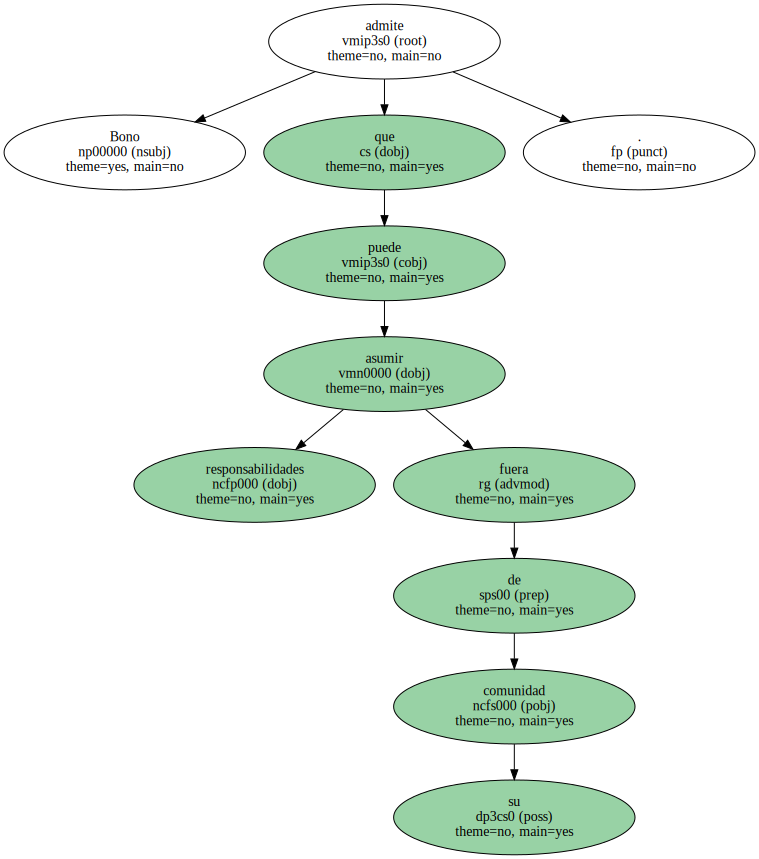
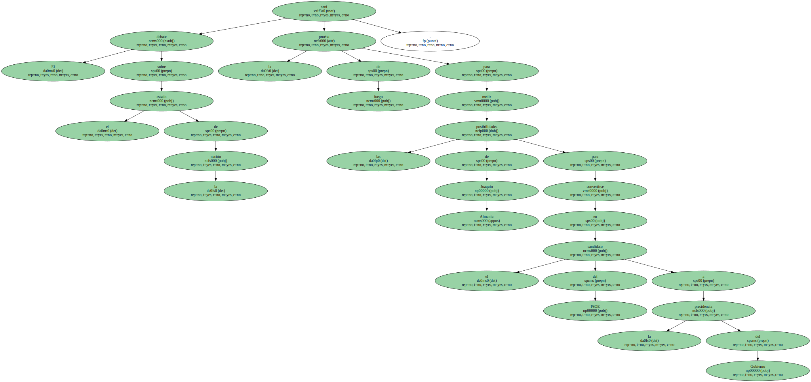
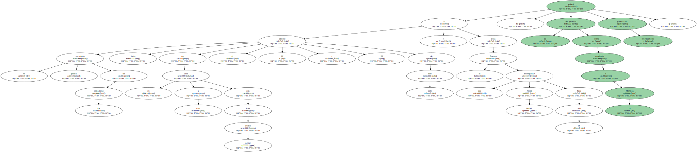
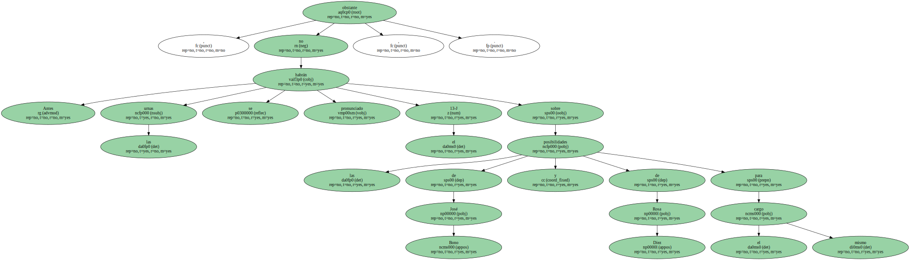
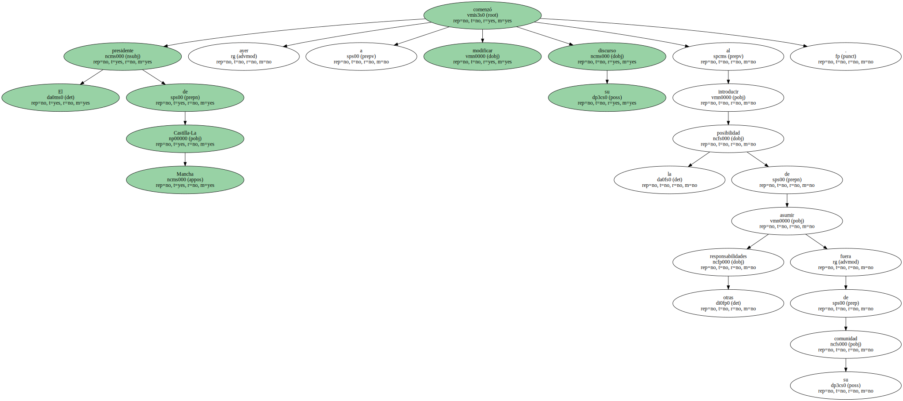
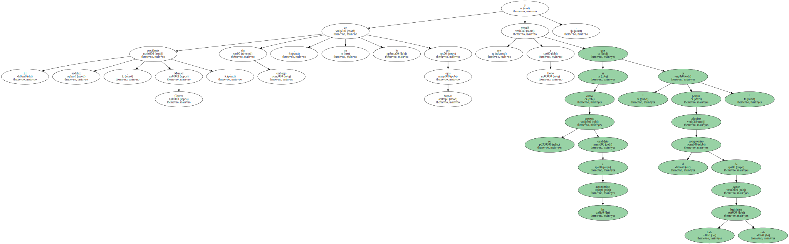

Bono admite que puede asumir responsabilidades fuera de su comunidad.
El debate sobre el estado de la nación será la prueba de fuego para medir las posibilidades de Joaquín Almunia para convertirse en el candidato del PSOE a la presidencia del Gobierno.
Si el secretario general de los socialistas obtiene éxito en su cara a cara con José María Aznar el 22 y 23 de este mes y evita el fracaso que Protagonizó Josep Borrell hace un año , su designación como candidato a la Moncloa estará prácticamente garantizada.
Antes , no obstante , las urnas se habrán pronunciado el 13-J sobre las posibilidades de José Bono y de Rosa Díez para el mismo cargo.
El presidente de Castilla-La Mancha comenzó ayer a modificar su discurso al introducir la posibilidad de asumir otras responsabilidades fuera de su comunidad.
Bono aseguró que no descartaba presentarse como diputado al Congreso en el futuro , aunque matizó que no deseaba dejar de ser presidente de Castilla-La Mancha para ser candidato a la Moncloa.

El presidente andaluz , Manuel Chaves , sin embargo , no lo ve con buenos ojos y ayer recordó a Bono que " si se presenta como candidato a las autonómicas es porque adquiere el compromiso de agotar toda esta legislatura ".
